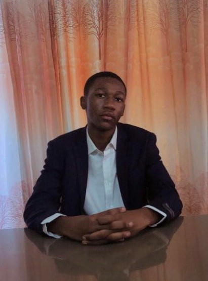
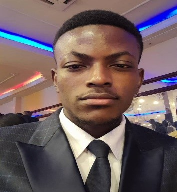
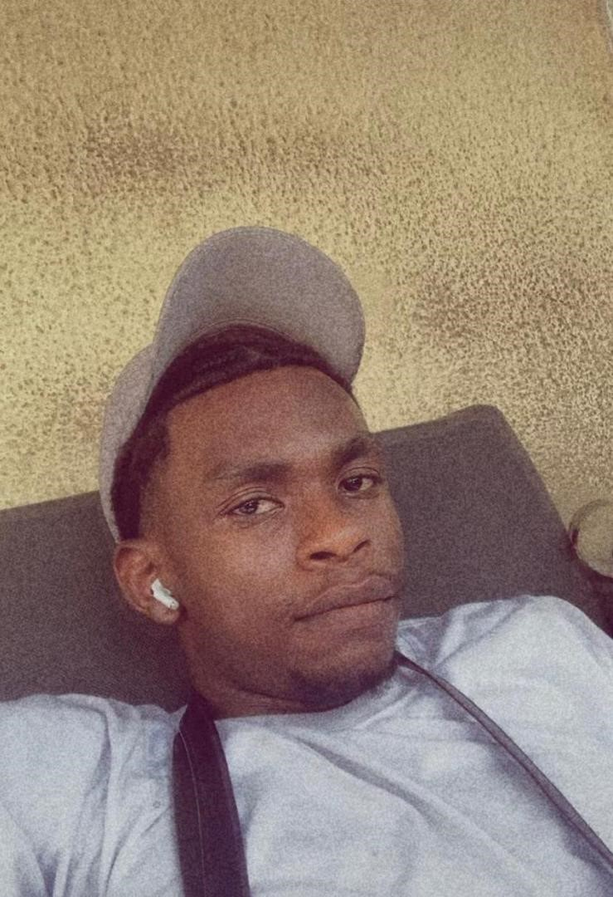
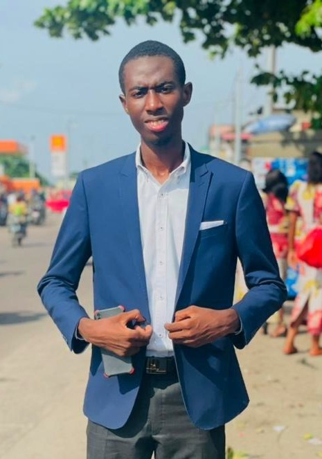
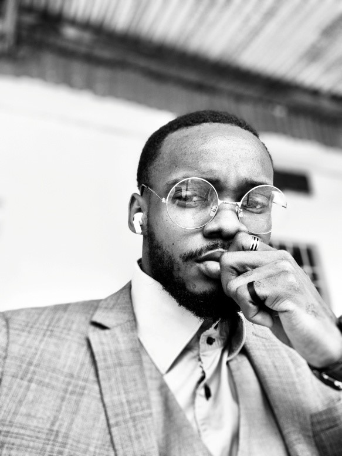
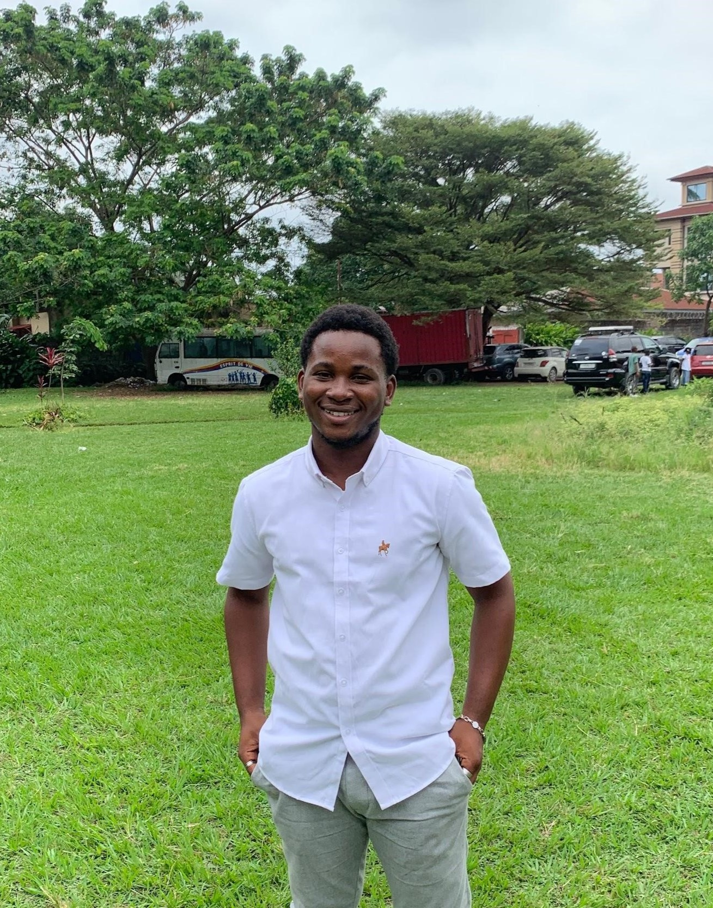
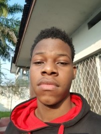
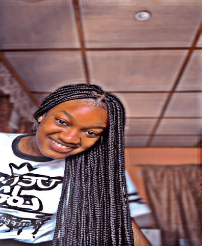
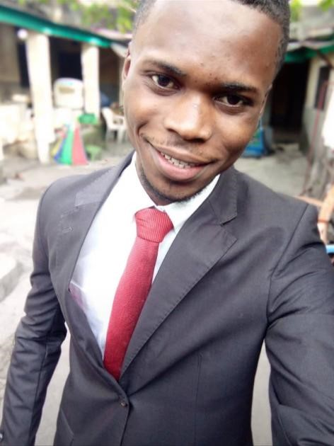
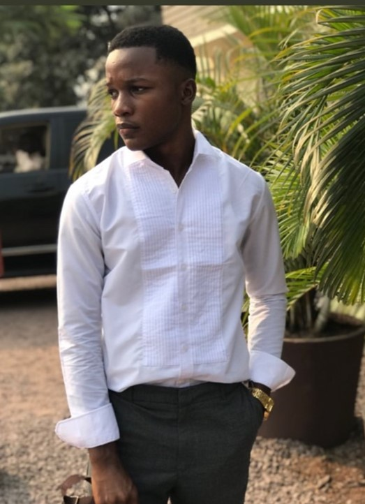

L2 LMD FASI
Akim CHALAZIRE MUKULUBANJI
est un étudiant congolais en deuxième année licence du nouveau système LMD à l’Université Protestante au Congo(UPC) dans la Faculté des Sciences Informatiques(FASI). Je suis né le 27 décembre 2001 à Bukavu dans la province du Sud-Kivu. Je suis le premier d’une famille de 3 enfants dont deux filles et cinq garçons.
Fils de BAHATI CHALAZIRE et ZAWADI MISENGA, passionné du basketball et du football.
Archip KHONDE MBADU,
je suis un étudiant congolais à l’Université Protestante au Congo(UPC) en deuxième année licence, faculté des sciences informatiques(FASI). Je suis né dans une famille chrétienne le 14/mars/2003 en RDC dans la ville de Kinshasa. Je suis le fils ainé de la famille qui est composée de quatre (4) enfants au total, dont trois (3) garçons et une (1) fille ; dont le père s’appelle AARRON MBADU MAVINGA et la mère ANGEL MUAKA POLA.
J’ai obtenu mon diplôme d’Etat à l’Ecole D’application de l’Université Pédagogique Nationale (EDAP/UPN) en 2021 élève en latin philo (littéraire). J’ai eu à faire une formation d’anglais après avoir obtenu mon diplôme, au Centre de formation cecontec/upn et au the wise center, mais je me suis limité au premier niveau, parce que je devais m’inscrire à l’université…
Voilà c’est tout ce que je peux dire concernant ma bibliographie.
 Joël AYEDE ARINDU
Joël AYEDE ARINDU
was born at January, 2nd 1905 in Pyongyang at North Korea, is a student in Second License at Computers Sciences at Protestant of Congo University (UPC). Fascined by new technologies of information and communications, by the Artificial Intelligence and also fascined by all mechanism for how data science and software engineering was developed and especially his development. Until this time, this man loves just to learn and also learn for building his own future of computer’s engineer.
 Ange BANGALA MPANYA
Ange BANGALA MPANYA
est un étudiant congolais en deuxième année licence à l’Université Protestante au Congo(UPC)/Faculté des Sciences Informatiques(FASI). Il est né le 11 décembre 2002 à Kinshasa en RDC. Ange est né dans une famille de 6 enfants dont 5 garçons et 1 fille il est troisième enfant de sa famille. Il grandit à Kingabwa dans un quartier pas très connu d’où il passait toute son enfance il aime bien jouer sa passion c’est le football son sport préféré ou il évolua au poste de gardien de but dans son club du quartier Ba Nzoyi (les abeilles).
Fait l’école maternelle à Saint Joseph de Cluny situé sur Kingabwa avenue buffle, ou il étudie la deuxième, et troisième maternelle.
Ainsi entamant la vie primaire à l’école Saint François Collège Kiwanuka. Il étudie la première jusqu’en sixième primaire est eu son diplôme primaire avec un pourcentage de 69 et au TENAFEP 41 était parmi les meilleurs côtes de l’école.
Son secondaire il le fait à la même école Collège Saint François de salésiens de don bosco l’école paire de l’école primaire. Une fois entré aux humanités il fait la scientifique et Biochimie comme filière de scientifique et eu son diplôme d’état avec 60% c'est fût le bon moment de ma vie il y en a autant de bons moments de ma vie mais celui-là j’aime bien le mentionner.
Et il compte aussi valider sa licence à l’UPC ou il est en L2 LMD.
Bon je crois que c’est tout ce que je peux parler sur Ange des livres il en encore pas écrit ça viendra de projet de réalisation sont en cours la famille viendra.
Ce fut un plaisir d’écrire ça merci à vous professeur Peace and Love.
Emmanuella-Thylane BAYONNE KOUKEM
est une étudiante de nationalité congolaise née le 14 novembre d’une certaine année. Bayonne est la seconde dans une famille de trois enfants dont un garçon et deux filles. Ayant obtenu son diplôme en Latin-Philosophie avec une bonne mention, ce qui lui a permis de ne pas faire un test d’admission à l’Université Protestante au Congo/UPC qui est le lieu où elle poursuit ses études aujourd’hui en deuxième année licence dans la FACULTE DES SCIENCES INFORMATIQUES / FASI.
Joël KALONJI KABEYA
est un étudiant congolais en deuxième année licence à l’Université Protestante au Congo(UPC)/Faculté des Sciences Informatiques(FASI). Il est né le 09 novembre 2002 à Kinshasa en RDC d’une fratrie de 8 enfants dont 4 filles et 4 garçons d’où il occupe la place de 5 eme. Passionné d’automobiles depuis tout petit Joël apprend à conduire à l’âge de 11 ans .

Bienfait KALALA SEFU
est un étudiant congolais en deuxième année de licence à l’Université Protestante au Congo(UPC)/Faculté des Sciences Informatiques(FASI). Il est né le 15 juin 2003 à Kinshasa ville province de la RDCongo dans une famille chrétienne de 5 enfants dont-il occupe la troisième place entre deux filles et deux garçons.
Passionné du sport et de la musique, il intégra la chorale de l’église Évangélique “Jésus la Gloire” où il sert Dieu en jouant au piano. Actuellement, l’étudiant KALALA est à la quête du duplôme de licence en science informatique de l’université protestante au congo.

Chris KIEKIE YEDIDIA
est un étudiant en faculté des sciences informatiques à l’université protestante au Congo, en deuxième licence. Il est aussi le secrétaire de la startup K’zer Business. Né à Kinshasa de la complicité de son Père Franck KIEKIE et de sa mère Maguy LUTUMBA, le 30 décembre 2002. C’est ingénieur en réseau en devenir et qui promet bel avenir pour le pays.
 MANDUNDU TSHISUMENE Exaucée
MANDUNDU TSHISUMENE Exaucée
est une étudiante congolaise en deuxième année licence à l’Université Protestante au Congo(UPC)/Faculté des Sciences Informatiques(FASI). Elle est née le 45 javier 3267 dans l'eau.
Nathan MAKASHI MBUYI
est un étudiant congolais en deuxième année licence à l’Université Protestante au Congo(UPC)/Faculté des Sciences Informatiques(FASI). Il est né le 23 mars 1999 à Kinshasa , fils de monsieur André kaykolongo et madame lady piema, 3e fils d’une famille de 4 enfants, Réside sur l’avenue kimbondo num 346 c/bandalungwa Q /lumumba, travail à mi-temps dans l’entreprise HELIUM BALLON , FBO au seins de l’entreprise FOREVER LIVING PRODUCT
Pascal BAYAULI MWASA
est un étudiant congolais en deuxième année licence à l’Université Protestante au Congo(UPC)/Faculté des Sciences Informatiques(FASI). Il est né le 18 octobre 2003 à Kinshasa en République Démocratie du Congo. Pascal est le fils unique de ses parents dont le père est BAYAULI MUSHABAA DEOGRACIAS et de la mère MUANJELU FILESI ANGE.

Audrey NGOMBA E-NGIA
est un étudiant évoluant à l’Université protestante au Congo en deuxième année licence en faculté des sciences informatiques. Il a vu le jour un certain vendredi 03 Septembre 20** à Kinshasa. Il est l’ainée d’une famille de 2 enfants. Audrey est un jeune homme passionné du football.
 Merveil BANZA KALUMBA
Merveil BANZA KALUMBA
est un étudiant congolais en deuxième année licence à l’Université Protestante au Congo (UPC), dans la Faculté des Sciences Informatiques (FASI). Il est né le 13 Mars 2003, dans la ville province de Kinshasa en République Démocratique du Congo. Merveil est d’une famille de 7 enfants dont 2 filles et 5 garçons, Fils de Mr Banza Dieudonné et de Mm Maloba Germaine. Origine de la ville province de Haut-lomami.
 MAVINGA BAMBA Exaucé
MAVINGA BAMBA Exaucé
est un étudiant congolais en deuxième année licence à l’Université Protestante au Congo(UPC)/Faculté des Sciences Informatiques(FASI). Il est né le 12 Avril 2004 à Kinshasa en République Démocratique du Congo. Exaucé est né dans une famille de 6 enfants dont 4 garçons et 2 filles et dont il est lui-même l’aine. Il aime la musique, est fan du foot, basket-ball, de la technologie et de la science. Il a fait une grande partie de ses études secondaires dans la province du Kongo-Central dans le territoire de Moanda. Diplômé en électricité à l’école d’application (EDAP/UPN).
Jeune ambitieux, il adore passer ses journées à réfléchir sur ce qu’il peut apporter dans son pays, en matière de la science. A cause de sa passion pour les technologies et la science, il a préféré faire la faculté des sciences informatiques.
Adonis MONGA KYONI
est un étudiant congolais en deuxième année de licence à l’Université Protestante au Congo (UPC) dans la faculté des sciences informatiques (FASI).
Il est ne le 24 Juin 1998 à Matadi au Kongo Central en République Démocratique du Congo. Il est l’ainé d’une famille de 5 enfants dont 2 filles et 3 garçons.
Il a fait ses études primaire au Complexe Scolaire Mavinga et ses études secondaire au complexe scolaire Aurora.

Benjamin IKUKU ONDA
est un homme très calme, intelligent, narcissique, croyant(Christ)…, il est le cadet d’une famille des 5 enfants dont 2 filles et 3 garçons, né le 11 /Septembre/ 2003 en RDC dans la ville province de Kinshasa.
Issu d’un père Sakata nommé IKUKU M’FIRI NKEWA Adrien et d’une mère Sakata aussi nommée MBUYULU MONGBAKE Françoise, Benjamin est connu par d’autres sur les réseaux sociaux sous le pseudo de Ben IKUKU.
Actuellement, c’est un étudiant de L’Université Protestante au Congo en deuxième année de licence (LMD) dans la faculté des sciences informatiques.
JOËL BULUPIY GALATI
est un étudiant congolais en deuxième année licence à l’Université Protestante au Congo(UPC)/Faculté des Sciences Informatiques(FASI). Il est né le 22 février 632 à MAGBENDA au MAGBOSA STATES. Joël est le garçon de la famille de 3 enfants dont 2 filles et lui le seul garçon.
Habitant de Tay , Q.MANANA

Daniel BWALYA CHALICHUPI
est un étudiant Congolais en deuxième année Licence à l’Université Protestante du Congo (UPC)/Faculté des Sciences Informatique (FASI).
Il est né à KINSHASA, le 1 Septembre
En REPUBLIQUE DEMOCRATIQUE du CONGO
Deuxième dans une famille de six enfants
Issa KITIMA BIN-RAMAZANI
est un étudiant congolais en deuxième année licence à l’Université Protestante au Congo (UPC)/Faculté des Sciences Informatiques (FASI). C’est passionner d’informatique, plus dans le domaine touchant le réseau et la maintenance des différentes outils et logiciels informatique., il décide d’en faire l’objet de ses études pour devenir informaticien.
ISSA reste aussi très intéresser par la musique et le monde musical. Auteur de quelques compositions propre à lui, il a su se faire un nom dans le monde la musique mais aussi grâce à une activité sur le réseau.
« L’Objectif est de réussir en faisant ce qu’on aime et ce en quoi nous sommes douées »

Junior IBUYE BALEGAMIRE
est un étudiant congolais en deuxième année licence à l’Université Protestante au Congo(UPC)/Faculté des Sciences Informatiques(FASI).
Né à Kinshasa le 30/03 d’une certaine année. Cadet d’une famille de 4 enfants dont 3 garçons et une fille.
Junior Ibuye a fini ses études humanitaires au Collège Saint Joseph/ Elikya dans l’option Mathématique-Physique avec distinction.

Noblesse KALOMBO KAZADI
est un étudiant de l’UPC né le 12 mars 2004 au Cotonou. Il a grandi à Lagos, au Nigeria.
Né le 12 mars 2004 au Cotonou, Kalombo Kazadi Noblesse passe son enfance dans quartier populaire de Cotonou. Son père, kalombo Emmanuel et sa mère jolie Muadi sont des Congolais.
En 2006, âgé de 2 ans, il quitte le Cotonou pour le Nigeria ; Il s’inscrit dans une école qui se trouve à Lagos appelé Caleb international School en 2008. Il gagne en concours de français et d’autre diverse activité jusqu’à ce qu’il termine ses études primaire. En 2014 il prend l’avion avec sa famille pour venir vivre aux Congo avec sa grand-mère ou il consacre une année à apprendre la langue française
En 2015, KALOMBO KAZADI fait sa toute première inscription dans un pays étranger a L’E.I.B le Cartesien qui est une école bilingue
En 2018, il quitte le Cartesien pour aller s’inscrire au lycée madame de sévigné.
En 2021, il raccroche son diplôme d’état avec 62% en faisant la section math-physique
En conclusion, la vie de KALOMBO KAZADI NOBLESSE a été marquée par des réalisations remarquables et des défis surmontés ; son parcours, de ses humbles débuts à son ascension vers la renommée, est une source d’inspiration pour beaucoup
Plamedie NGOY NONGOLOLA
Née le 06 janvier 2003 , dans la ville de Lubumbashi, Plamedie Ngoy Nongolola est issue d’une famille de sept enfants dont elle est cinquième. Tous enfants de Florimond Ngoy et Julie Mungusa.
Elle a donc 2 grands frères dont Nelson et Chrispin ; 2 grandes sœurs dont Saintia et Gracia et 2 jeunes frères dont Aaron et Daniel.
Plamedie a fait ses études maternelles au complexe scolaire Saint Michel de Lubumbashi. Après mutation en 2011, elle a dû quitter le complexe scolaire ANUARITE pour l’institut BOBOKOLI à Kinshasa où elle poursuivit ses études primaires et humanitaires en scientifique/Math-physiques.
Passionnée par la technologie et son évolution, Plamedie se lance dans des formations en ligne pour en apprendre plus. C’est dans cette curiosité qu’elle décida de faire des études en Informatique.
A ce jour, Plamedie poursuit ses études universitaires à l’Université Protestante au Congo…
Rhema MABEKA MASIMANGO
est un étudiant congolais en deuxième année licence à l’Université Protestante au Congo (UPC)/Faculté des Sciences Informatiques (FASI). Il est né le 24 mars à Kwilu-Ngongo au Kongo Central. Rhema est l’ainée d’une famille de 3 enfants dont 2 filles et lui le seul garçon…. Depuis petit, fasciner par les ordinateurs, il décide dans faire l’objet de ses études pour devenir informaticien, précisément dans les domaines touchant les bases de données.
Rhema reste aussi très intéresser par la musique et le management. Il a déjà eu à travailler dans un label et une maison de production, ce fut sa première expérience dans le monde du travail. Suivant beaucoup de formation a gauche a droite, car très inspirer, intelligent et ambitieux, il compte accomplir et réaliser ses objectifs de vie.
France SALAKIAKU MVINDU,
née le 20 Mars 200* à Kinshasa en République Démocratique du Congo, est une étudiante congolais en deuxième année licence à l’Université Protestante au Congo(UPC)/Faculté des Sciences Informatiques(FASI). 2ème enfants d’une grande famille, elle fait ses études secondaires au Complexe Scolaire Cardinal Malula où elle obtient son baccalauréat en 2019. Elle poursuit ensuite ses études universitaire à l’Université Protestante au Congo(UPC) en faculté de Sciences informatique(FASI)…
Daniel VINGU PUNGI
est un étudiant congolais en deuxième année de licence à l'Université Protestante au CongoUPC en sigle, dans la faculté des sciences informatiques FASI en sigle, né d’une famille nombreuse le 15 juin2003, dans la ville province de Kinshasa,fils de ses parents, grande taille faisant 1m85 et 60 kilo de masse corporelle, résidant à Kinshasa, Chrétien de religion Catholique.

Gladys NDOTA LWADI
Née en république démocratique du congo dans la ville de lubumbashi le 31 janvier 2004 , Et de parent congolais tous deux vivants. Mademoiselle NDOTA LWADI GLADYS est fille de son père LWADI JEEAN-JACQUES et de sa mère KHANGE BIBIANE , femme dévouée à l’éducation de ses filles . Dès l’obtention de son diplôme d’état en 2021 avec 60% ,
Mademoiselle NDOTA LWADI va obtenir l’inscription à l’université protestante au congo ( u.p.c ) où elle poursuit ses études d’informatique pour accomplir son rêve d’ingénieur informaticienne .
Israël NGALA MULUME
Etudiant de Deuxième Licence de l’Université Protestante au Congo, UPC en sigle à la faculté de sciences informatique(FASI).
C/Ngaliema
Né à Lubumbashi le 25 Mai 1997
Q/ Joli Parc
Nationalité
Congolaise
22, Av. Kilimani /Kinshasa
Célibataire
Téléphone : +243 828 996 839
E-mail: ngalamulumeisrael03@gmail.com
Twitter: IsraelNgala
QUALIFICATIONS
• Etudes primaires (2012-2013) : Certificat d’études primaires à l’Ecole Primaire C.S UJUSI à Lubumbashi
• Etudes humanitaires (2017-2018) : Diplôme d’Etat en Chimie Biologie à l’INSTITUT LUBE /Haut Katanga
• Brevet en Gestion des finances et management formation entrepreneuriale dénommée « l’idée au projet » donnée par INGENIOUS CITY en collaboration avec le comité des étudiants de l’Université Protestante au Congo le 21 janvier 2023.
Heidi BONGOLO NADE
, étudiante congolaise à l’Université Protestante au Congo (UPC) dans la faculté de sciences informatiques (FASI) en L2 LMD.
Elle est née le 06/03/2004. Cinquième de sa famille de 6 enfants dont 5 filles et 1 garçon.
Exaucé BOY MUKE
est un étudiant congolais en deuxième année licence à l’Université Protestante au Congo(UPC)/Faculté des Sciences Informatiques(FASI). Il est né le 20 octobre 1890 à KINSHASA en République Démocratique du Congo . Dernier enfant d’une famille de 14 enfants ; il a poursuivi ses études secondaires au collège Saint Joseph/Elikya.
Caleb MPUTU YONGANGA
est un étudiant congolais en deuxième année licence à l’Université Protestante au Congo(UPC) en Faculté des Sciences Informatique(FASI).
Fils de CLEMENT MPUTU YONGANGA et de ANTOINETTE BAILU BIKOLO; il est né le 07/05/2004 à l’équateur en RDC.
Caleb est le cadet d’une famille de six enfants dont trois filles et trois garçons. Il n’a pas encore de carrière professionnel et n’a encore travaillé nul part.
Dieumerci LWAKASI
C’est toujours moi DIEUMERCI LWAKASI étudiant a l’UPC de la FACULTE DE SCIENCES INFORMATIQUE en L2 LMD né à WALUNGU le 20.10.1999. Grandi dans la ville de BUKAVU, j’ai fait mes études dans cette ville, primaire comme secondaire je vous jure j'adore cette ville c'est une ville parfaite plaine des bonheurs.
Ah oui j'avais déjà oublié Je suis le quatrième sur 10 enfants.

Merdi MUKENI NGIMBI
est un homme calme, intelligent, attentionné, chrétien, musicien…, il est deuxième d’une famille des 4 enfants dont 2 filles et 2 garçons, né le 31 /MAI/ 2003 en RDC dans la province du Kongo Central à Matadi.
Fils de NGIMBI NGOMA FLORY (père) et de NTUO NSIAMI JACQUIE (mère)
Il a effectué ses études primaires et secondaires dans la ville de Matadi et en est ressorti détenteur d’un diplôme de fin de cycle primaire et d’un diplôme de fin de cycle humanitaire de l’année 2020-2021.
Actuellement, c’est un étudiant de L’Université Protestante au Congo en deuxième année de licence (LMD) dans la faculté des sciences informatiques.
 Exaucé LUBELA TSHIAMA
Exaucé LUBELA TSHIAMA
est né un certain 24/11/2003 à Kinshasa , né d'une famille de deux enfants dont il est le prémisses suivit de son frère DANIEL BIKINDU LUBELA ils sont issus de FIFI GABANA KEMBO et PAPY LUBELA TSHIAMA.
Exauce a décroché son diplôme en biochimie au groupe scolaire TUMBA où il était parmi les bons joueurs d'handball de la génération et maintenant étudiant en deuxième licence en sciences informatiques à l'université protestante au Congo .
Jacques YELA BANZA
Biographie : né à Kinshasa le 07 /12/2002
Le deuxième d’une famille de 4 enfant
Étudiant à l’upc dans la faculté des sciences informatiques
Humble serviteur de Dieu

Chris ATWEKA NGWANZA
de son nom complet Christ-en-vie ATWEKA NGWANZA est né le 22 Aveil 2002 à Kinshasa , en République Démocratique du Congo,d’un père congolais et d’une mère Congolaise . Issu d'une famille de 3 garçons dans laquelle il est le cadet,il grandit dans un quartier animé de la ville. Dès son plus jeune âge, Chris a montré un vif intérêt pour le sport en général,le football en particulier et ainsi qu’à son pays..
Après avoir obtenu son diplôme d'études secondaires en 2021,, Chris poursuit ses études à l'Université Protestante Au Congo , où il est en passe d’obtenir un diplôme de licence en FASI.
Dylan KAYEYA TAMBWE
est un homme drôle, intelligent, attentif, chrétien, sportif…, il est deuxième d’une famille de 3 enfant dont 2 fille et 1 garçon, né le 19/Avril/ 2003 en RDC a Kinshasa.
Fils de KAYEYA LUKASU ERIC (père) et de WANGAJI NDEMBA REBECCA (mère)
Il a effectué ses études primaires et secondaires dans la ville de Kinshasa et en est ressorti détenteur d’un diplôme de fin de cycle primaire et d’un diplôme de fin de cycle humanitaire de l’année 2020-2021.
Actuellement, c’est un étudiant de L’Université Protestante au Congo en deuxième année de licence (LMD) dans la faculté des sciences informatiques.
Rocher EKIND’ENKANI NGOY,
né le 5 février 2003 à Kinshasa, est un étudiant de l’Université Protestante au Congo (UPC) en sciences informatiques. Il est le cadet d’une famille de trois enfants (RUTH EKIND’ENKANI & Jephté EKIND’ENKANI ). Il fit ses études maternelles et primaires à l’école bonne d’enfance au sein de laquelle il excella avec brio. Il obtient son diplôme d’Etat à l’Institut Mgr Bokeleale.
Il est originaire du MAI-NDOMBE dans le secteur BASENGELE. Fils de Adolphe EKIND’ENKANI ISOMBO et MBONKITA NSASI Cathy, il est le fruit de le résultat du fruit de leur amour. Il se démarque au sein de son école en participant à plusieurs activités professionnelles (Danses, défilé , Poèmes , récitations, etc…).
 Corneil EKOFO WEMA
Corneil EKOFO WEMA
un étudiant congolais en deuxième année licence du système LMD à l’université protestante au Congo en sigle Upc / faculté des sciences informatiques en sigle FASI.
Il est né à Kinshasa, le 29 juin 2003, Corneil est le 3eme d’une famille de 5 enfants dont les noms sont respectivement : - IYOTO ISAKO Schadrack
-MBOYO ISAKO Prescille
- EKOFO WEMA Corneil
-EYALE ISAKO Charon
-ILONGA ISAKO Israël
Dont le père répond au nom de IYOTO ISAKO Theophile et Madame Bola liey Anastasie.
Il a fini ses études primaires au complexe scolaires Monano 2 à limete 14eme rue poids lourds.
Il a fini ses études secondaires et humanitaires à l’école Saint Raphael où il a obtenu son diplôme avec 64% en option commerciale et gestion.
Il est originaire de Tshuapa plus précisément Esangani.
Prospère ENGEBA NTOTIMBE
est un étudiant congolais en deuxième licence à l’université protestante au Congo (UPC), faculté de sciences informatique (FASI). Il est né le 07 février 2004 à Kinshasa. Prospère est le cadet d’une famille de 3 enfants dont 2 garçons et une fille…
Aristote HADJI AMURI
est un étudiant congolais en deuxième année de licence à l’Université Protestante au Congo(UPC) dans la Faculté des sciences informatique (FASI). Il est né à Kinshasa le 03 mars d’une certaine année. Aristote est le fils ainé d’une famille de 3 enfants. Son père s’appelle Serge KABALANGA et sa mère Sylvie SAIDIYA. Aristote aime beaucoup manger le fufu, son sport préféré est le football, son club préféré est le FC Barcelone, son joueur préféré est Lionel Andres MESSI et sa ville préférée est Miami Beach situé aux États-Unis d’Amérique.
Hervé BOKELE WALAKA
est un étudiant congolais en deuxième année de cycle de licence à l’Université Protestante au Congo (UPC) en sigle, en faculté des sciences informatiques (FASI). Il est né le 24 novembre 2001 à Kinshasa , République démocratique du Congo Herve est deuxième d’une famille de 5 enfants dont 4 garçons et une fille cadette,
Directeur financier l’entreprise à Fondation pour le Développement de Kiri (FODEKI) en sigle.
Sam Sam IMBA,
né le 07/Mars/1945 à Kinshasa, est cadet dans une famille de 7 enfants dont 5 garçons et 2 filles. Ce jeune homme est passionné de la musique chrétienne, de la cuisine, des sujets d’explorations scientifiques dans plusieurs domaines de la vie courante notamment : le domaine informatique avec des sujets en rapport avec l’Intelligence Artificielle et le Software Engineering ainsi le domaine de la musique chrétienne plus particulièrement. Toujours apprendre et dans la simplicité, c’est sa devise.
 Alain KALUME NTUMBA
Alain KALUME NTUMBA
est un étudiant congolais en deuxième année de licence à l’Université Protestante au Congo(UPC) dans la Faculté des sciences informatique (FASI). Il est né à Kinshasa le 21 mai d’une certaine année. Alain vient d’une famille de 14 enfants dont 8 garçons et 6 filles, son père est un militaire et sa mère une commerçante. Il a fait ses études primaires au collège Don Bosco et ses études humanitaires à l’institut de la Gombe option électricité industriel où il a obtenu son diplôme d’état.
 Chella KIMFUTA NANIKAFUAKO
Chella KIMFUTA NANIKAFUAKO
est une étudiante congolaise en deuxième année licence à l’Université Protestante au Congo(UPC)/Faculté des Sciences Informatiques(FASI). Elle est né le 25 juillet 2003 à Kinshasa en RÉPUBLIQUE DÉMOCRATIQUE DU CONGO. Chella est la troisième d’une famille de 5 enfants dont 5 filles. Née du père SIMON KIMFUTA LWANGU et de la mère ELIE KIMESA NGOMBIE, Chella commence son parcours scolaire à la maternelle de l’école C.S MERIBA située à la cité maman Mobutu dans la commune de Mont-Ngafula et c’est dans cette même école qu'elle obtenu son ENAFEP.
Après cella, elle décida de quitter le C.S MERIBA et s'inscrire au LYCÉE MOTEMA MPIKO et c’est dans ce même lycée qu'elle obtenue son diplôme d’État en Pédagogie générale.
 Serge KAYEMBA KALONJI
Serge KAYEMBA KALONJI
est un étudiant congolais en deuxième année de licence à l’Université Protestante au Congo(UPC) dans la Faculté des sciences informatique (FASI). Il est né à Kinshasa le 09 août d’une certaine année.
Ghislain KATENDE WA KATENDE
est un étudiant congolais en deuxième année de licence à l’Université Protestante au Congo(UPC) dans la Faculté des sciences informatique (FASI). Il est né à Kinshasa le 19 novembre d’une certaine année. Il joue au football et au basketball, il a fait ses études humanitaires à l’école Révérend Kim où il a obtenu son diplôme d’état.
Exaucée KANA MAKIESE
est une étudiante congolaise en deuxième année licence du nouveau système LMD à l’Université Protestante au Congo(UPC)/Faculté des Sciences Informatiques(FASI). Elle est née le 01 Mai 200… à Kinshasa dans la République Démocratique du Congo. Exaucée est la deuxième d’une famille de 9 enfants dont 3 filles et 6 garçons….
Bénédicte NTUMBA NGENDA-MWADI
est une étudiante congolaise en L2(LMD)en Sciences Informatiques à L'université Protestante au Congo(UPC). Elle est née le 15/03/2000 à Kinshasa.
BENEDICTE est l'ainé d'une famille de 5enfants dont 3garçons et 2filles. BENEDICTE est passionnée par la danse.